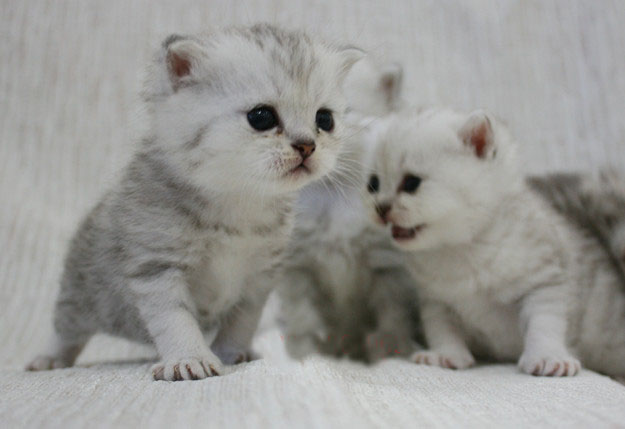
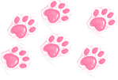
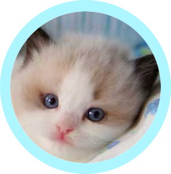

金吉拉猫原意其实是一种绒鼠的名称，祖先是安哥拉猫与波斯猫。金吉拉是最早纯人工育种，经过多年精心繁育而成的一个特色猫种。原产国在英国。特征是毛尖颜色不如银色渐层猫的清楚，属颜色较浅的猫。毛型厚长、柔滑。个性温顺。由波斯猫经过人为刻意培育而成，养猫界俗称"人造猫"。金吉拉猫于1894年首次被作为一个独立的品种出现在英国水晶宫猫展上。它们是猫中贵族，其性情温文尔雅，聪明敏捷，善解人意，少动好静，叫声尖细柔美，爱撒娇，举止风度翩翩，天生一副娇生惯养之态，给人一种华丽高贵的感觉。历来深受世界各地爱猫人士的宠爱，是长毛猫的代表。金吉拉猫属于新品种的猫，由波斯猫经过人为刻意培育而成，养猫界俗称"人造猫"，是一种非常可爱的猫种。金吉拉四肢较短，体态比波斯猫稍娇小但显得更灵巧。金吉拉全身都是浓密而有光泽的毛，在欧美等国家的金吉拉猫以单色系较为普遍，经过多年的人工培育，目前色系已衍生出许多样。
.png) 金吉拉幼年...嗯没错
金吉拉幼年...嗯没错
下面内位是成年的.png)
幼年布偶，，，
之后是成年布偶.png)
.png) 一只橘猫瘦了
一只橘猫瘦了千千万万只橘猫.png)